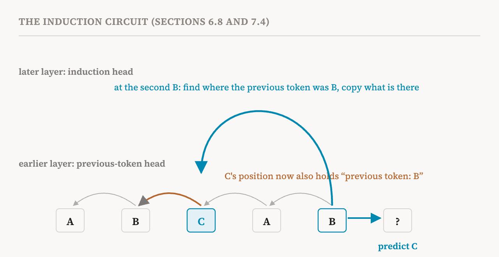
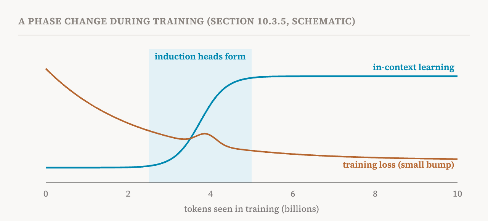

This part is different from the others. Instead of following one section of the book, it gathers a case study that the book tells in three places: in the chapter on features (section 6.8, pages 47–48), in the chapter on circuits (section 7.4, page 58), and in the chapter on learning dynamics (section 10.3.5, page 90). The subject is induction heads, probably the best-understood mechanism in language models. Seeing one mechanism through three lenses is a good way to review what the last fifteen parts have built, and to see what each lens adds.
What an induction head does
Induction heads were first identified in 2021, in small transformers, and analysed in depth in 2022. They are attention heads that implement a rule of conditional copying over repeated sequences. In plain words: if the current token has appeared earlier in the text, look at what came right after it last time, and predict that again.
The book's example is the sequence A B C A B. The model has to predict what comes after the second B. It has seen "A B" before, followed by C. An induction head, sitting at the second B, attends back to the position just after the first B, which holds C, and raises the model's score for C. The rule should work for any tokens in any positions: "Harry Potter … Harry" predicts "Potter", and a variable name used earlier in a program predicts the same continuation.
This simple rule matters because it is a basic form of in-context learning: using the text in front of the model, rather than anything stored in its weights, to decide what comes next.
The circuit view
The first lens is the circuit of part 6. The book makes a point that is easy to miss: an induction head cannot do this on its own. To attend to C, it needs a way to find "the position whose previous token was B". But each position's residual stream starts out holding only its own token. Nothing at C's position says that B came before it.
That information is supplied by a different head in an earlier layer, which a 2021 study of a two-layer, attention-only transformer called a previous-token head. It attends from each position to the position just before it, and writes that token's information into the residual stream. After it runs, C's position carries a trace of B. Now the induction head, at the second B, can search for positions whose previous-token information matches B, find C, and copy it into the prediction. The two heads, in different layers, communicating through the residual stream as part 4 described, form the induction circuit. In the two-layer model, this pair is enough to produce the behaviour.

The book lists the evidence. Ablating induction heads showed that they causally support in-context learning in the attention-only model, the necessity test of part 18. Circuit analysis showed their dependence on the earlier previous-token heads. And, as we will see, they appear abruptly during training, at the same time as a sharp improvement in in-context learning.
In larger models, with more layers and with MLPs, the mechanism becomes more complex. But the book argues that the core principle stays the same: context is carried forward across layers and used to retrieve tokens conditionally, based on matches with repeated subsequences.
The feature view
The second lens is the feature analysis of parts 10 to 13. Induction heads were originally described as particular attention heads, components. Later work suggests that the computation is more naturally understood at the level of distributed representations.
Sparse autoencoders can be trained on the outputs of attention layers, not only on the residual stream or MLPs. A 2024 study that did so found families of features capturing recurring patterns and dependencies on context, and some of them match the behaviour originally attributed to induction heads. More broadly, modern analyses suggest that induction heads are not isolated mechanisms but take part in distributed feature circuits, in which several interacting features recur and combine across layers. Cross-layer methods such as the crosscoders of part 13 suggest that some features are represented consistently across layers rather than recomputed at each one.
The lesson the book draws is a caution about the unit of analysis. Attention heads, even specialised ones like induction heads, may be only part of broader, distributed representations. Naming a head "the induction head" is useful, but the computation it takes part in may not stop at its boundaries.
The learning-dynamics view
The third lens, from the book's chapter on how models learn (which parts 26 to 28 cover), looks at the model across training rather than at the finished model. Several facts about the induction circuit are invisible in a single trained model and only become visible across checkpoints, the saved copies of a model at successive points in training.
Watch a single training run on the sequence A B C A B. At early checkpoints, the model predicts from how often tokens appear in general, and gets no benefit from the earlier occurrence of A B. Then, in a narrow window of training, roughly 2.5 to 5 billion tokens into training for the models studied in 2022, induction heads form and the model starts predicting C by attending back to the first occurrence. In the same window, in-context learning improves sharply and the training loss shows a small bump. The ability arrives not gradually but abruptly, in what is called a phase change.

The timing also adds a kind of causal evidence that one checkpoint cannot give. Ablating an induction head in the final model shows only that it is necessary for the behaviour in that model. It does not show the stronger claim that the forming of the induction circuit is what caused the capability to develop. The 2022 study tested that claim by intervening on the formation itself. Its "smeared key" modification built the previous-token step directly into the attention computation, so that the whole circuit could form inside a single layer. With this change, one-layer models, which otherwise never develop in-context learning, acquired it, and in deeper models the transition moved earlier. Changing when the circuit could form changed when the ability appeared.
Three lenses, three kinds of claim
Put side by side, the three views say different things, and each has its limits.
| Lens | Book section | What it shows | What it cannot show alone |
|---|---|---|---|
| Circuit | 7.4 | Which components implement the behaviour and how they depend on each other | Whether the components are the natural units, or how the circuit came to exist |
| Features | 6.8 | That the computation is spread over interacting features across layers | Which of those features is necessary or sufficient, without interventions |
| Learning dynamics | 10.3.5 | When the mechanism forms, and that its formation causes the capability | What exactly the mechanism computes, without the other two lenses |
The circuit view gives a crisp mechanism. The feature view warns that the mechanism may be wider than the components named in it. The developmental view turns a correlation in time into causal evidence by changing when the circuit can form. No single lens would have given the whole picture, which is a fair summary of the book's attitude to the field as a whole.
| Term | Meaning |
|---|---|
| Induction head | An attention head that, when the current token appeared before, predicts the token that followed it last time |
| Conditional copying | Copying a token only when a matching earlier context is found |
| Previous-token head | An attention head that writes each token's identity into the next position |
| Induction circuit | A previous-token head and an induction head in a later layer, working together |
| Attention-only transformer | A small transformer without MLP layers, used to study attention in isolation |
| Checkpoint | A saved copy of a model at some point during training |
| Phase change | An ability that appears abruptly within a narrow window of training |
| Smeared key | A modification that builds the previous-token step into attention, so the circuit can form in one layer |
Next, part 20 closes the circuits group with the book's proposal for judging any interpretability claim: five dimensions, each with metrics and a protocol.